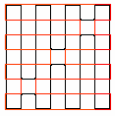

Problem ID 116278
Two ants crawled along their own closed route on a $7\times7$ board. Each ant crawled only on the sides of the cells of the board and visited each of the 64 vertices of the cells exactly once. What is the smallest possible number of cell edges, along which both the first and second ants crawled?
Solution
An example where the number of "common" sides is 16 is shown in the figure (one route is black, the other is red).

Each of the ants visited 64 different edges. The total number of edges is $7\times8\times2$ = 112. Therefore, there must be at least 64 + 64 - 112 = 16 edges which were visited twice.
Answer
16 edges
Remarks
10 points.